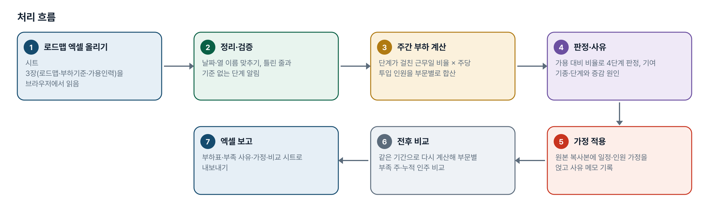
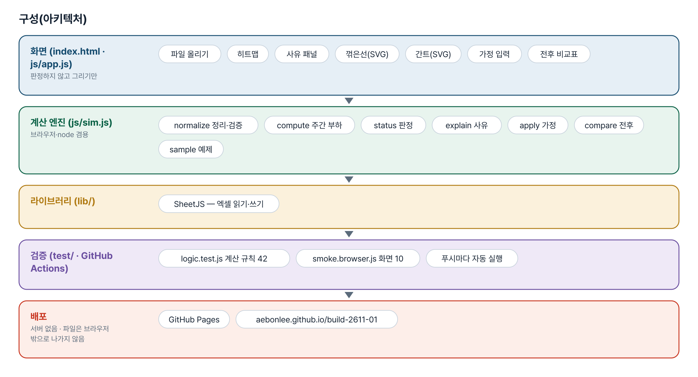
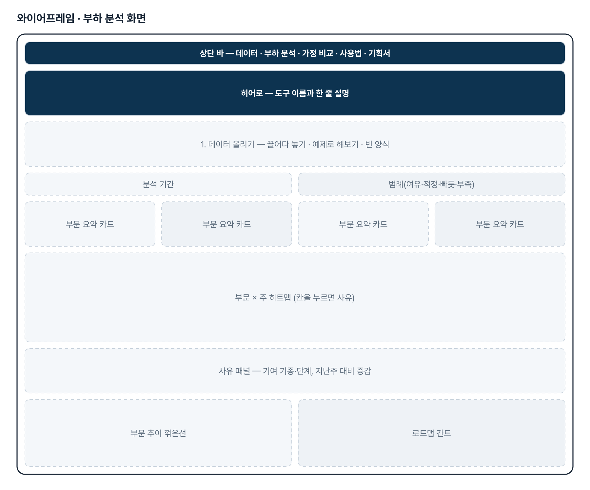
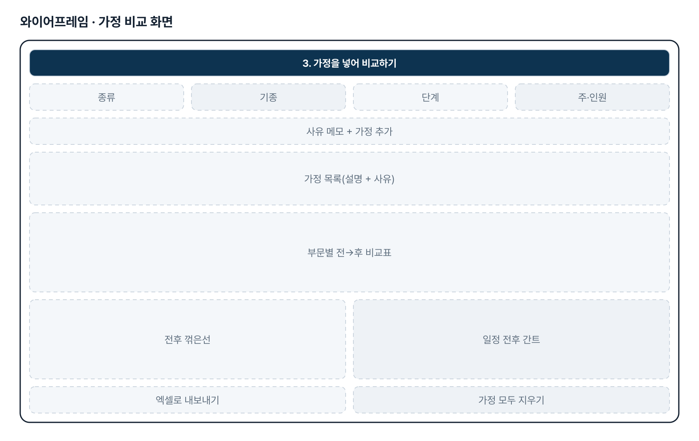
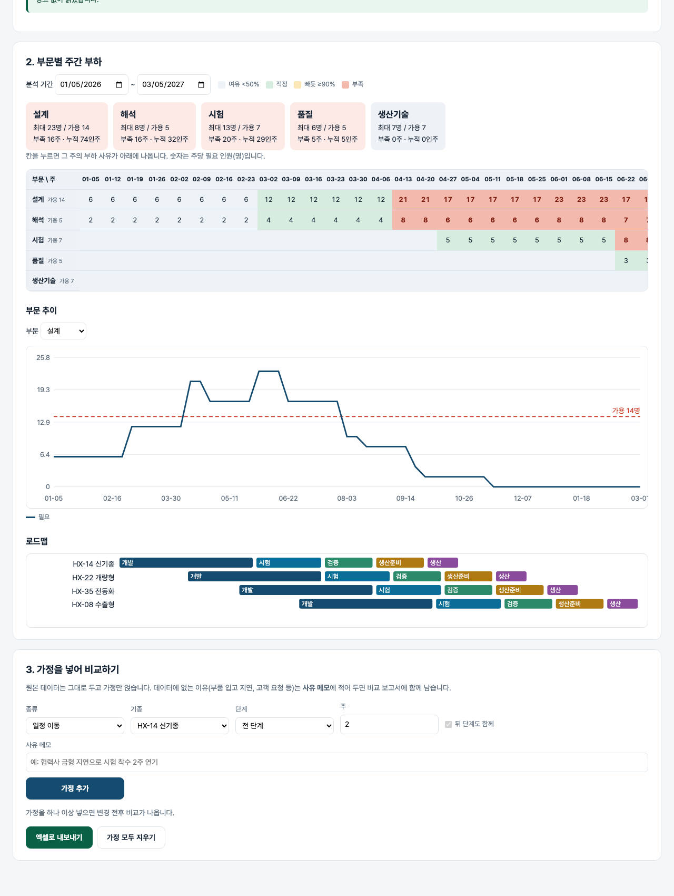

기획서 내려받기
파이프라인 · 아키텍처 · 와이어프레임 · 개발일지가 들어간 워드 문서입니다. 버전마다 따로 남깁니다.
| 버전 | 날짜 | 바뀐 점 | 파일 |
|---|---|---|---|
| v1.0 | 2026-11-02 | 첫 판 — 주간 부하·사유·가정 전후 비교·엑셀 내보내기 / 기획서 워드 판·파이프라인·아키텍처·와이어프레임 추가 | 워드 내려받기 |
요구사항과 구현
| 기획서 요구 | 구현 |
|---|---|
| 개발부터 생산까지 부문별 업무 부하 예상 | 로드맵 × 부하기준(단계·부문·주당투입) → 주별 부하표(히트맵) |
| 일정 변경 즉시 반영 | 분석 기간·가정을 바꾸면 곧바로 다시 계산 |
| Raw Data 그대로 분석 | 엑셀 시트 3장(로드맵·부하기준·가용인력), 열 이름 별칭 |
| 시각적·수치적 분석 | 히트맵 · 부문 추이 꺾은선 · 간트 · 부문 요약(최대·부족 주·누적 인주) |
| 증가/부족 사유 | 칸을 누르면 기여 기종·단계와 지난주 대비 시작·종료·증감 |
| 가정 상황 반영 · 전후 비교 | 일정 이동(뒤 단계 함께)·기간 증감·가용 변경·부하기준 변경, 부문별 전→후 표와 전후 꺾은선 |
| 데이터 밖의 사유로 바뀐 일정 표현 | 가정마다 사유 메모 — 비교 화면과 엑셀 「가정목록」에 함께 남음 |
그림으로 보기





개발일지
2026-11-02 · 첫 판
- 패들릿 build02 정호영 기획2를 작업 지시서(CLAUDE.md)로 옮기고 구현
- 계산 엔진 sim.js — 정리·검증, 근무일 비율 부하, 판정, 사유, 가정 4종, 전후 비교
- 화면 — 히트맵·사유·추이·간트·가정·엑셀
- 계산 테스트 42 · 화면 테스트 10 통과, GitHub Actions 통과, 배포